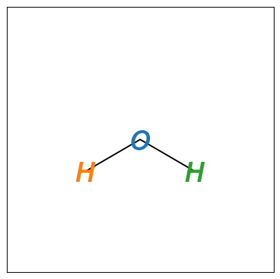
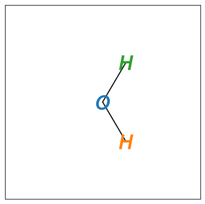
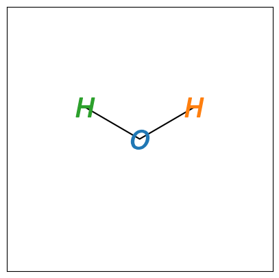

Exercise#
Lets plot the molecule first.
import visualisation
import numpy as np
atoms = np.loadtxt('water.txt')
x = atoms[:, 0]
y = atoms[:, 1]
visualisation.show(x, y)

Now we can create the function for the rotation matrix.
def rotation_matrix(angle):
angle = np.deg2rad(angle)
return np.array([[np.cos(angle), -np.sin(angle)],
[np.sin(angle), np.cos(angle)]])
We can then perform the matrix multiplication. Note that to achieve this on the correct set of dimension we wuse array slicing and transposition. This is discussed in detail in LOIL 10.1.
atoms[:, :2] = np.matmul(rotation_matrix(90), atoms[:, :2].T).T
x = atoms[:, 0]
y = atoms[:, 1]
visualisation.show(x, y)

atoms[:, :2] = np.matmul(rotation_matrix(90), atoms[:, :2].T).T
x = atoms[:, 0]
y = atoms[:, 1]
visualisation.show(x, y)
